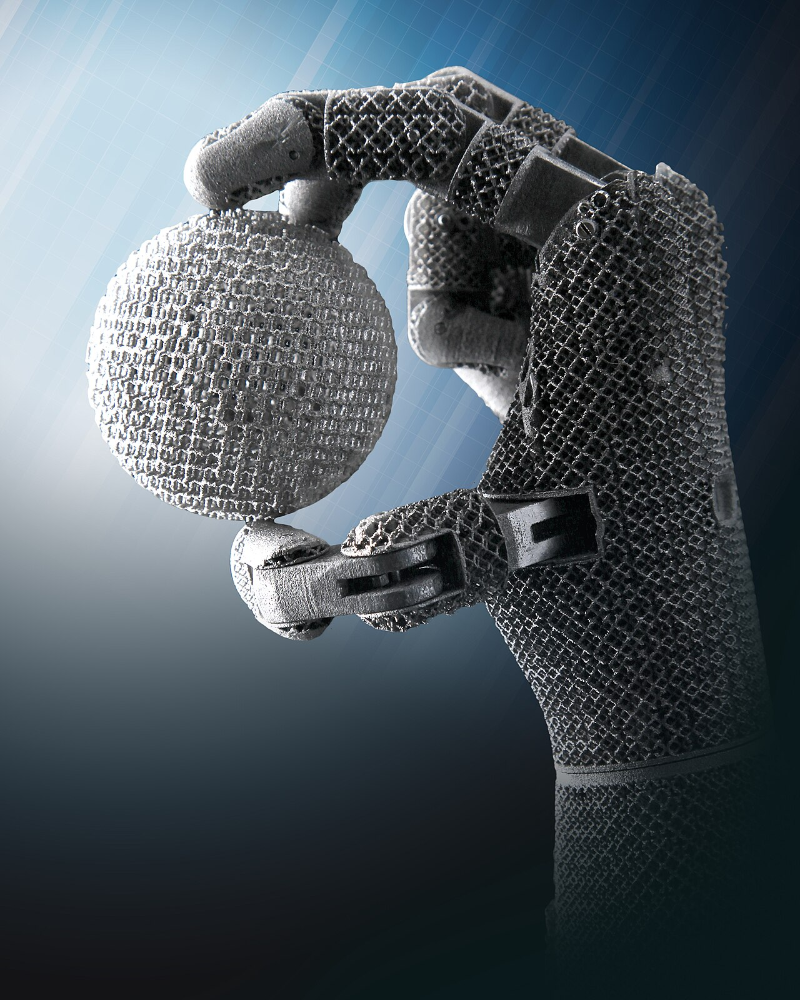

PACE: Physically Grounded Active Compliance for Dexterous Force Control
Under review · Internal experiment planning page
Abstract
English
Contact-rich dexterous manipulation requires robots to generate precise motions while actively regulating forces across continuously evolving multi-finger, multi-contact interactions. Recent advances in tactile sensing have substantially improved contact adaptation under occlusion, slip, and object deformation. Yet most learning-based policies employ touch as an additional observation, an auxiliary prediction target, or an action-refinement signal for kinematic trajectory generation, leaving the relationship between policy outputs and the forces realized by the low-level controller largely underexplored.
Compliance control provides a key connection between motion and force. A low-level position controller converts the discrepancy between a target reference and the contact-constrained realized configuration into joint torques, thereby generating and regulating interaction forces. Conventional approaches typically rely on contact-force estimation, robot models, and control Jacobians, which are difficult to apply to the distributed and continuously evolving contacts of high-DoF dexterous hands.
We introduce PACE: Physically Grounded Active Compliance for Dexterous Force Control, a policy that learns active force regulation from physical feedback. PACE introduces Active–Reactive Force Perception to jointly sense the two coupled sides of physical interaction: joint torques characterize how forces are generated, transmitted, and distributed through the hand, while fingertip tactile signals capture local reaction forces, shear, and deformation at the contact interface. A Compliance Grounding Module then uses Gated Compliance Cross-Attention to progressively update the action representation according to the current force interaction. PACE directly generates controller-executable active compliance actions, expressing intended motion and active force regulation within a unified compliant joint command.
We further introduce a real-world benchmark for dexterous force control spanning five interaction regimes: multi-contact friction, tangential interaction, high-curvature fragile contact, rotational torque, and deformable-object interaction. PACE outperforms motion-control and visuotactile action-prediction baselines, while ablations validate the contributions of active–reactive force perception, compliance grounding, and the active compliance action formulation.
中文
接触丰富的灵巧操作既要求机器人生成准确的运动，也要求其在持续变化的多指、多点接触中主动调节作用力。近年来，触觉感知显著提升了机器人在遮挡、滑动和物体形变条件下的接触适应能力。然而，现有学习型策略通常将触觉作为额外观测、辅助预测目标或动作修正信号，用于改善运动学轨迹，其动作输出与低层控制器所产生作用力之间的关系仍缺少显式建模。
柔顺控制为连接运动与力提供了关键机制。低层位置控制器能够将目标 reference 与受接触约束的真实构型之间的偏差转化为关节力矩，从而产生并调节作用力。传统方法通常依赖接触力估计、机器人模型和控制 Jacobian，难以覆盖高自由度灵巧手中分布式、持续演化的多点接触。
我们提出 PACE: Physically Grounded Active Compliance for Dexterous Force Control，一种从物理反馈中学习主动控力的策略。PACE 引入 Active–Reactive Force Perception，联合感知物理交互中的主动施力与接触反作用：关节力矩刻画作用力如何通过整只手产生、传递和分配，指尖触觉刻画接触界面的局部反作用、剪切与形变。随后，Compliance Grounding Module 通过 Gated Compliance Cross-Attention，根据当前力交互状态逐层更新动作表征。PACE 直接生成低层控制器可执行的 active compliance action，以统一的柔顺关节指令表达期望运动与主动施力。
我们进一步构建真实世界灵巧力控 benchmark，包含多接触摩擦、切向作用、高曲率脆弱接触、旋转力矩和可变形物体交互五类任务。实验结果表明，PACE 优于运动控制与视触觉动作预测方法；消融实验进一步验证了主动—反作用力感知、柔顺反馈模块和主动柔顺动作表示的有效性。
Contributions
- Whole-hand physical perception. PACE fuses precise fingertip tactile fields with distributed joint-torque histories that capture transmitted and actively generated loads.
- Learned active compliance. The policy uses gated physical cross-attention to directly generate a compliant joint command and jointly ground the command's force-producing component, without explicit contact-model identification or Jacobian inversion.
- Real-World Force Benchmark. Five tasks isolate multi-contact friction, tangential force, curved fragile contact, rotational torque, and deformable interaction.
- A controlled evaluation plan. Main comparisons and controlled ablations isolate whole-hand physical perception, active compliance formulation, feedback integration, observation coverage, and post-training compute/data scaling.
Method
PACE augments a pretrained GR00T vision–language–action policy with a physical-feedback pathway. Language, vision, and robot state establish the evolving manipulation context, while fingertip tactile and joint-torque histories form a complementary whole-hand physical memory. Gated physical cross-attention repeatedly updates a shared action latent that directly generates the compliant joint command and, as an auxiliary grounded output, the command's active-compliance component.

Tactile + torque → physical memory → gated cross-attention
Shared latent → qcompliance + Δqintent
Executed command = qcompliance
Local contact area, geometry, deformation, shear, and fingertip wrench.
Distributed actuator effort, transmitted load, and active force generation through the full hand.
Real-World Force Benchmark
The benchmark organizes everyday manipulation by the physical role that determines success. This section is also the primary inference-demo gallery: each task will show an autonomous rollout together with its task-specific success definition.
Begin with two playing cards lying on the black platform. Use the right hand to pick up one card and transfer it to the left hand. Hold the first card upright and steady with the left hand. Then use the right hand to pick up the remaining card, align it with the card held in the left hand, and slide it into the same grip so that both cards are held together. Finish with both cards securely held in the left hand and the right hand released. Do not bend or drop either card.
Experiments
Every planned study uses the same five-task benchmark and reports a macro mean. A grouped chart summarizes the main comparison, horizontal bars summarize component ablations, and paired scaling curves separate post-training compute from demonstration count.
Main comparison
Seven representative dexterous-manipulation and VLA approaches evaluated under a shared task protocol.
| Method | Insert poker | Open book | Draw on balloon | Unscrew cap | Squeeze toothpaste | Mean |
|---|---|---|---|---|---|---|
| DECO | — | — | — | — | — | — |
| ViTacFormer | — | — | — | — | — | — |
| T-Rex | — | — | — | — | — | — |
| GR00T | — | — | — | — | — | — |
| CGP | — | — | — | — | — | — |
| DexTeleop | — | — | — | — | — | — |
| PACE | — | — | — | — | — | — |
Table 1. Main comparison across the five real-world force-sensitive tasks.
Whole-hand physical perception ablation
Test whether fingertip tactile sensing and distributed joint-torque sensing are complementary, and whether same-finger fusion is preferable to separate physical tokens.
| Physical perception | Insert poker | Open book | Draw on balloon | Unscrew cap | Squeeze toothpaste | Mean |
|---|---|---|---|---|---|---|
| Vision only | — | — | — | — | — | — |
| Tactile only | — | — | — | — | — | — |
| Torque only | — | — | — | — | — | — |
| Torque + tactile · separate | — | — | — | — | — | — |
| Torque + tactile · fused | — | — | — | — | — | — |
Table 2. Whole-hand physical perception ablation across sensing modalities and token organization.
Active compliance formulation ablation
Hold physical perception and feedback integration fixed while changing the action semantics used to supervise and execute the policy.
| Action formulation | Insert poker | Open book | Draw on balloon | Unscrew cap | Squeeze toothpaste | Mean |
|---|---|---|---|---|---|---|
| PACE · q_compliance + delta_q | — | — | — | — | — | — |
| PACE-Direct · q_compliance | — | — | — | — | — | — |
| PACE-Nominal · q_nominal | — | — | — | — | — | — |
Table 3. Active compliance formulation ablation: nominal motion, direct compliant motion, and delta-grounded compliant motion.
Physical feedback integration ablation
Hold sensing and action formulation fixed while changing how tactile-force feedback enters and updates the shared action latent.
| Feedback integration | Insert poker | Open book | Draw on balloon | Unscrew cap | Squeeze toothpaste | Mean |
|---|---|---|---|---|---|---|
| Suffix fusion | — | — | — | — | — | — |
| Image-memory fusion | — | — | — | — | — | — |
| Ungated physical cross-attention | — | — | — | — | — | — |
| Gated physical cross-attention | — | — | — | — | — | — |
Table 4. Physical feedback integration ablation across token routing and compliance-update mechanisms.
Wrist-camera observation ablation
A compact observation study that isolates the contribution of wrist-mounted visual coverage while keeping physical sensing and the PACE policy fixed.
| Camera observation | Insert poker | Open book | Draw on balloon | Unscrew cap | Squeeze toothpaste | Mean |
|---|---|---|---|---|---|---|
| PACE · with wrist cameras | — | — | — | — | — | — |
| PACE · w/o wrist cameras | — | — | — | — | — | — |
Table 5. Small ablation on wrist-camera observations.
Post-training compute and data scaling
Evaluate one representative task with two controlled sweeps. The left panel fixes 100 post-training demonstrations and varies optimization steps; the right fixes 50k steps and varies the number of demonstrations.
Failure Cases & Limitations
Failure cases will be grouped by the part of the closed loop that breaks. Each final example should pair the failed rollout with synchronized tactile, torque, and compliance-offset traces so the diagnosis is supported by evidence.
Aliased multi-contact load
Different contact configurations can produce similar joint-torque patterns, leading to an incorrect physical-state estimate.
Contact outside tactile regions
Side or palm contacts may be visible only indirectly through torque and can remain poorly localized.
Late or saturated correction
Fast impacts or large disturbances can exceed policy update bandwidth or available joint actuation.
Unseen physical regime
Extreme friction, stiffness, deformation, or visually ambiguous task progress can fall outside the learned interaction distribution.
Planned reporting rule. Categories are provisional until evaluation. Public failure demos should be consecutive, unedited trials rather than hand-selected isolated frames.
Citation
PACE is currently an anonymous working draft. Public citation information will be updated with the preprint.
@misc{pace2027,
title = {PACE: Physically Grounded Active Compliance for
Dexterous Force Control},
author = {Anonymous Authors},
year = {2027}
}
Temporary image: Oak Ridge National Laboratory, “Robotic hand,” CC BY 2.0. Temporary video: Giacomo Alessandroni, “Hand-made robotic arm with Arduino,” CC BY-SA 4.0; clipped and transcoded locally. Both will be replaced by project-owned media.